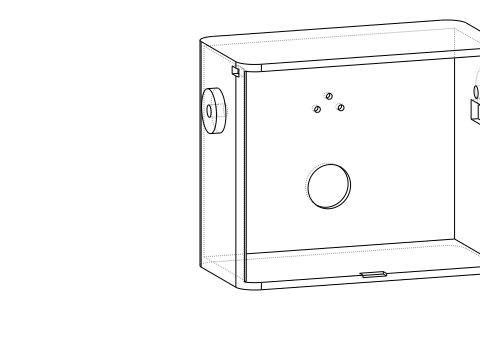
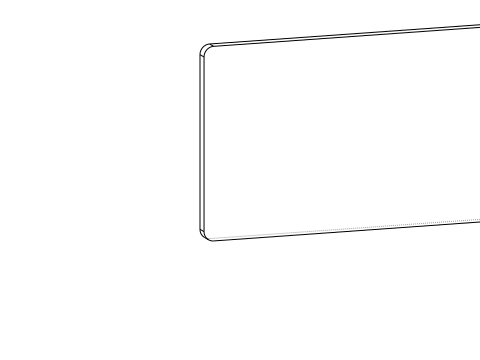
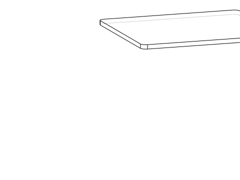
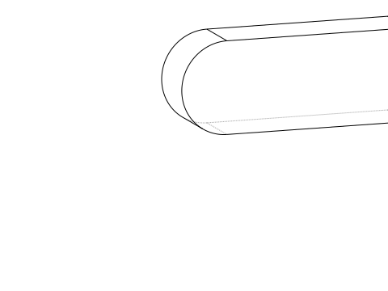
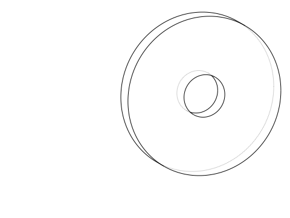
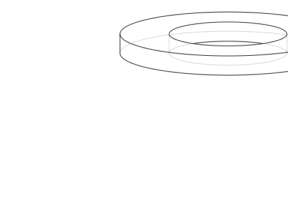
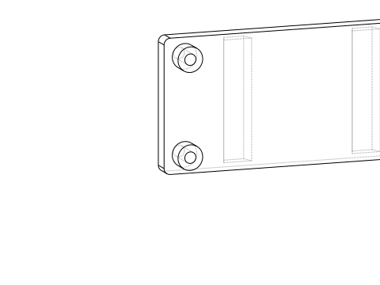

front shell
91,816 mm³ · one valid solid

electronics tray
17,188 mm³ · one valid solid

service panel
21,599 mm³ · one valid solid

left limb
33,256 mm³ · one valid solid

right limb
33,256 mm³ · one valid solid

left servo adapter
772 mm³ · one valid solid

right servo adapter
772 mm³ · one valid solid

camera bezel
2,370 mm³ · one valid solid

electronics carrier
8,044 mm³ · one valid solid